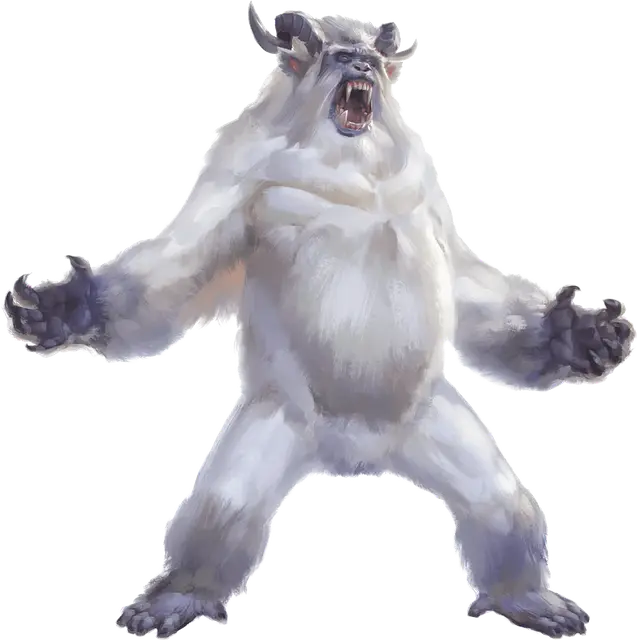

Йети
Yeti
Большой Монстр, хаотично-злой

Класс Доспеха 12 (природный доспех)
Хиты 51 (6к10 + 18)
Скорость 40 футов, лазая 40 футов
| мод | спас | ||
|---|---|---|---|
| СИЛ | 18 | +4 | +4 |
| ЛОВ | 13 | +1 | +1 |
| ТЕЛ | 16 | +3 | +3 |
| мод | спас | ||
|---|---|---|---|
| ИНТ | 8 | −1 | −1 |
| МДР | 12 | +1 | +1 |
| ХАР | 7 | −2 | −2 |
Навыки Восприятие +3, Скрытность +3
Иммунитет к урону холод
Чувства тёмное зрение 60 футов, пассивное Восприятие 13
Языки Язык Йети
Опасность 3 (700 опыта)
Бонус мастерства +2
Среда обитания Арктика
Особенности
Страх огня. Если йети получает урон огнём, он до конца своего следующего хода совершает с помехой броски атаки и проверки характеристик.
Тонкий нюх. Йети совершает с преимуществом проверки Мудрости (Восприятие), полагающиеся на обоняние.
Снежный камуфляж. Йети совершает с преимуществом проверки Ловкости (Скрытность), когда пытается спрятаться на снежной местности.
Действия
Мультиатака. Йети может использовать Леденящий взгляд и совершает две атаки когтем.
Коготь. Рукопашная атака оружием: +6 к попаданию, досягаемость 5 футов, одна цель. Попадание: Рубящий урон 7 (1к6 + 4) плюс урон холодом 3 (1к6).
Леденящий взгляд. Йети нацеливается на одно существо, которое видит в пределах 30 футов от себя. Если цель видит йети, она должна преуспеть в спасброске Телосложения Сл 13 от этой магии, иначе получит урон холодом 10 (3к6) и станет парализованной на 1 минуту, если только не обладает иммунитетом к холоду. Цель может повторять этот спасбросок в конце каждого своего хода, оканчивая эффект на себе при успехе. Если спасбросок цели был успешным, или эффект на ней закончился, цель получает иммунитет к Леденящему взгляду всех йети (но не отвратительных йети) на 1 час.
Описание
Несомые ветром с далеких гор вопли йети порождают страх в сердцах немногочисленных пастухов и шахтеров, обитающих среди вершин. Эти громадные существа рыщут среди горных пиков в непрестанной охоте за пищей. Их снежно-белый мех позволяет им как призракам бродить на фоне снежных ландшафтов. Холодные как лед, обезьяньи глаза йети могут заморозить добычу на месте.
См. дополнительно статью: "Бестиарий: Йети"